7. Interfaces gráficas con C# y VS.NET
7.1. Conceptos básicos de las interfaces gráficas de usuario
7.1.1. Un primer proyecto
Creemos un primer proyecto de «Aplicación de Windows»:
 |
- [1]: Crear un nuevo proyecto
- [2]: Tipo de aplicación: Aplicación de Windows
- [3]: el nombre del proyecto no es importante por ahora
- [4]: El proyecto creado
 |
- [5]: Guardar la solución actual
- [6]: nombre del proyecto
- [7]: archivo de la solución
- [8]: nombre de la solución
- [9]: se creará una carpeta para la solución [Chap5]. Sus proyectos se encontrarán en subcarpetas.
 |
- [10]: proyecto [01] en la solución [Chap5]:
- [Program.cs] es la clase principal del proyecto
- [Form1.cs] es el archivo fuente que gestiona el comportamiento de la ventana [11]
- [Form1.Designer.cs] es el archivo fuente que encapsula la información sobre los componentes de la ventana [11]
- [11]: archivo [Form1.cs] en modo de diseño
- [12]: la aplicación generada se puede ejecutar con (Ctrl-F5). Se muestra la ventana [Form1]. Se puede mover, cambiar de tamaño y cerrar. Ahora están disponibles los elementos básicos de una ventana gráfica.
La clase principal [Program.cs] es la siguiente:
using System;
using System.Windows.Forms;
namespace Chap5 {
static class Program {
/// <summary>
/// The main entry point for the application.
/// </summary>
[STAThread]
static void Main() {
Application.EnableVisualStyles();
Application.SetCompatibleTextRenderingDefault(false);
Application.Run(new Form1());
}
}
}
- línea 2: las aplicaciones con formularios utilizan el espacio de nombres System.Windows.Forms.
- línea 4: el espacio de nombres original se ha renombrado como Chap5.
- línea 10: cuando se ejecuta el proyecto (Ctrl-F5), se ejecuta el método [Main].
- líneas 11-13: la aplicación Classroom pertenece al espacio de nombres System.Windows.Forms. Contiene métodos estáticos para iniciar y detener aplicaciones gráficas de Windows.
- línea 11: opcional: permite aplicar diferentes estilos visuales a los controles colocados en un formulario
- línea 12: opcional: establece el motor de renderizado para los textos de los controles: GDI+ (true), GDI (false)
- línea 13: la única línea imprescindible del método [Main]: crea una instancia de la clase [Form1], que es la clase del formulario, y le indica que se ejecute.
El archivo fuente [Form1.cs] es el siguiente:
using System;
using System.Windows.Forms;
namespace Chap5 {
public partial class Form1 : Form {
public Form1() {
InitializeComponent();
}
}
}
- línea 5: el formulario Form1 deriva de la clase [System.Windows.Forms.Form], que es la clase padre de todas las ventanas. La palabra clave partial indica que la clase es parcial y puede completarse mediante otros archivos fuente. Este es el caso aquí, donde la clase Form1 se divide en dos archivos:
- [Form1.cs]: donde se encuentra el comportamiento del formulario, incluidos sus controladores de eventos
- [Form1.Designer.cs]: contiene los componentes del formulario y sus propiedades. Este archivo se regenera cada vez que el usuario modifica la ventana en modo [diseño].
- líneas 6-8: constructor de la clase Form1
- línea 7: llama a InitializeComponent. Este método no está presente en [Form1.cs]. Se encuentra en [Form1.Designer.cs].
El archivo fuente [Form1.Designer.cs] es el siguiente:
namespace Chap5 {
partial class Form1 {
// <summary>
// Required designer variable.
// </summary>
private System.ComponentModel.IContainer components = null;
//tax <summary>
//tax Clean up any resources being used.
//tax </summary>
//tax <param name="disposing">true if managed resources should be disposed; otherwise, false.</param>
protected override void Dispose(bool disposing) {
if (disposing && (components != null)) {
components.Dispose();
}
base.Dispose(disposing);
}
#region Windows Form Designer generated code
//tax <summary>
//a IImpot object Required method for Designer support - do not modify
//Tax the contents of this method with the code editor.
/// </summary>
private void InitializeComponent() {
this.SuspendLayout();
///
///
///
this.AutoScaleDimensions = new System.Drawing.SizeF(6F, 13F);
this.AutoScaleMode = System.Windows.Forms.AutoScaleMode.Font;
this.ClientSize = new System.Drawing.Size(196, 98);
this.Name = "Form1";
this.Text = "Form1";
this.ResumeLayout(false);
}
#endregion
}
}
- línea 2: la clase es siempre Form1. Tenga en cuenta que ya no es necesario repetir que deriva de Form.
- líneas 25-37: el método InitializeComponent llamado por el constructor de la clase [Form1]. Este método crea e inicializa todos los componentes del formulario. Se regenera cada vez que se modifica el formulario en modo [diseño]. Se crea una sección denominada «región» para delimitarlo en las líneas 19-39. El desarrollador no debe añadir ningún código a esta región: se sobrescribirá la próxima vez que se regenere.
Al principio, es más sencillo ignorar el código de [Form1.Designer.cs]. Se genera automáticamente y es la traducción al lenguaje C# de las elecciones realizadas por el desarrollador en modo [diseño]. Veamos un primer ejemplo:
 |
- [1]: Selecciona el modo [diseño] haciendo doble clic en el archivo [Form1.cs]
- [2]: haz clic con el botón derecho del ratón en el formulario y selecciona [Propiedades]
- [3]: Ventana de propiedades de [Form1]
- [4]: la propiedad [Text] representa el título de la ventana
- [5]: el cambio en la propiedad [Text] se tiene en cuenta tanto en el modo [diseño] como en el código fuente [Form1.Designer.cs]:
private void InitializeComponent() {
this.SuspendLayout();
...
this.Text = "Mon 1er formulaire";
...
}
7.1.2. Un segundo proyecto
7.1.2.1. El formulario
Vamos a iniciar un nuevo proyecto llamado 02. Para ello, seguimos el procedimiento descrito anteriormente para crear un proyecto. La ventana que se va a crear es la siguiente:
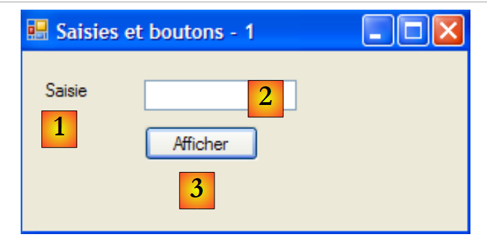 |
Los componentes del formulario son los siguientes:
n.º | nombre | tipo | función |
1 | etiquetaSaisie | Etiqueta | un texto |
2 | cuadro de texto de entrada | Cuadro de texto | un campo de entrada |
3 | botónMostrar | Botón | para mostrar el contenido del campo de entrada textBoxSaisie en un cuadro de diálogo |
Para crear esta ventana, proceda de la siguiente manera:
 |
- [1]: haz clic con el botón derecho del ratón en el formulario, fuera de cualquier componente, y selecciona la opción [Propiedades]
- [2]: aparecerá la hoja de propiedades de la ventana en la esquina inferior derecha de Visual Studio
Las propiedades del formulario incluyen:
para establecer el color de fondo de la ventana | |
para establecer el color de los dibujos o del texto en la ventana | |
para asociar un menú a la ventana | |
para asignar un título a la ventana | |
para establecer el tipo de ventana | |
para establecer la fuente con la que se escribirá en el | |
para establecer el nombre de la ventana |
Aquí, configuramos las propiedades Texto y Nombre:
Campos de entrada y botones - 1 | |
frmSaisiesBoutons |
 |
- [1]: elija la caja de herramientas [Common Controls] de entre las cajas de herramientas disponibles en Visual Studio
- [2, 3, 4]: haz doble clic sucesivamente en los componentes [Etiqueta], [Botón] y [Cuadro de texto]
- [5]: los tres componentes aparecen en el formulario
Para alinear y ajustar el tamaño de los componentes correctamente, puede utilizar los elementos de la barra de herramientas:
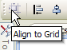 | 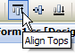 | 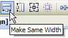 | |||||||
 | |||||||||
El principio del formato es el siguiente:
- seleccione los componentes que desea formatear juntos (mantenga pulsada la tecla Ctrl mientras hace clic para seleccionar los componentes)
- seleccione el tipo de formato deseado:
- (continuación)
- opciones Alinear: permite alinear los componentes arriba, abajo, a la izquierda, a la derecha, en el centro, etc.
- las opciones «Igualar tamaño» permiten que los componentes tengan la misma altura o anchura
- La opción «Espaciado horizontal» permite alinear los componentes horizontalmente, con intervalos entre ellos de la misma anchura. Lo mismo ocurre con la opción «Espaciado vertical» para alinear verticalmente.
- La opción «Centrar» permite centrar un componente horizontalmente (Horizontalmente) o verticalmente (Verticalmente) en el
Una vez colocados los componentes, configuramos sus propiedades. Para ello, haz clic con el botón derecho del ratón sobre el componente y selecciona la opción Propiedades:
 |
- [1]: seleccione el componente para abrir su ventana de propiedades. En esta ventana, modifique las siguientes propiedades: nombre: labelSaisie, texto: Input
- [2]: proceda de la misma manera: nombre: textBoxSaisie, texto: no introduzca nada
- [3] : nombre : buttonAfficher, texto : Ver
- [4]: la ventana en sí: nombre: frmSaisiesBoutons, texto: Campos de entrada y botones - 1
- [5]: ejecuta (Ctrl-F5) el proyecto para tener una primera impresión de la ventana en funcionamiento.
Lo que se ha hecho en el modo [diseño] se ha traducido al código [Form1.Designer.cs]:
namespace Chap5 {
partial class frmSaisiesBoutons {
...
private System.ComponentModel.IContainer components = null;
...
private void InitializeComponent() {
this.labelSaisie = new System.Windows.Forms.Label();
this.buttonAfficher = new System.Windows.Forms.Button();
this.textBoxSaisie = new System.Windows.Forms.TextBox();
this.SuspendLayout();
///
///
///
this.labelSaisie.AutoSize = true;
this.labelSaisie.Location = new System.Drawing.Point(12, 19);
this.labelSaisie.Name = "labelSaisie";
this.labelSaisie.Size = new System.Drawing.Size(35, 13);
this.labelSaisie.TabIndex = 0;
this.labelSaisie.Text = "Saisie";
///
///
///
this.buttonAfficher.Location = new System.Drawing.Point(80, 49);
this.buttonAfficher.Name = "buttonAfficher";
this.buttonAfficher.Size = new System.Drawing.Size(75, 23);
this.buttonAfficher.TabIndex = 1;
this.buttonAfficher.Text = "Afficher";
this.buttonAfficher.UseVisualStyleBackColor = true;
this.buttonAfficher.Click += new System.EventHandler(this.buttonAfficher_Click);
///
// Form1
// labelSaisie
this.textBoxSaisie.Location = new System.Drawing.Point(80, 19);
this.textBoxSaisie.Name = "textBoxSaisie";
this.textBoxSaisie.Size = new System.Drawing.Size(100, 20);
this.textBoxSaisie.TabIndex = 2;
// buttonAfficher
// textBoxSaisie
// frmSaisiesBoutons
this.AutoScaleDimensions = new System.Drawing.SizeF(6F, 13F);
this.AutoScaleMode = System.Windows.Forms.AutoScaleMode.Font;
this.ClientSize = new System.Drawing.Size(292, 118);
this.Controls.Add(this.textBoxSaisie);
this.Controls.Add(this.buttonAfficher);
this.Controls.Add(this.labelSaisie);
this.Name = "frmSaisiesBoutons";
this.Text = "Saisies et boutons - 1";
this.ResumeLayout(false);
this.PerformLayout();
}
private System.Windows.Forms.Label labelSaisie;
private System.Windows.Forms.Button buttonAfficher;
private System.Windows.Forms.TextBox textBoxSaisie;
}
}
- líneas 53-55: los tres componentes han dado lugar a tres campos privados en la clase [Form1]. Obsérvese que los nombres de estos campos son los nombres asignados a los componentes en el modo [diseño]. Esto también ocurre en la línea 2, que corresponde a la propia clase.
- líneas 7-9: se crean los tres objetos de tipo [Label], [TextBox] y [Button]. Estos se utilizan para gestionar los componentes visuales.
- líneas 14-19: configuración de la etiqueta labelSaisie
- líneas 23-29: configuración del botón buttonAfficher
- líneas 33-36: configuración del campo de entrada textBoxSaisie
- líneas 40-47: configuración del formulario frmSaisiesBoutons. Las líneas 43-45 muestran cómo añadir componentes al formulario.
Este código es fácil de entender. Por lo tanto, es posible crear formularios mediante código sin necesidad de utilizar el modo [diseño]. En la documentación de MSDN sobre Visual Studio se ofrecen numerosos ejemplos al respecto. Dominar este código te permite crear formularios en tiempo de ejecución: por ejemplo, crear un formulario sobre la marcha para actualizar una tabla de base de datos, cuya estructura solo se descubre en tiempo de ejecución.
Solo queda escribir el procedimiento para gestionar un clic en la vista. Selecciona el botón para acceder a su ventana de propiedades. Esta ventana tiene varias pestañas:
 |
- [1]: lista de propiedades en orden alfabético
- [2]: eventos de control
Se puede acceder a las propiedades y eventos de control por categoría o por orden alfabético:
- [3]: Propiedades o eventos por categoría
- [4]: Propiedades o eventos en orden alfabético
Los eventos en categorías para el botón Afficher son los siguientes:
 |
- [1]: la columna de la izquierda de la ventana muestra los posibles eventos del botón. Al hacer clic en un botón se produce el evento Click.
- [2]: la columna de la derecha contiene el nombre del procedimiento que se invoca cuando se produce el evento correspondiente.
- [3]: si haces doble clic en la celda del evento Click, pasaremos automáticamente a la ventana de código para escribir el controlador de eventos Click del botón buttonAfficher :
using System;
using System.Windows.Forms;
namespace Chap5 {
public partial class frmSaisiesBoutons : Form {
public frmSaisiesBoutons() {
InitializeComponent();
}
private void buttonAfficher_Click(object sender, EventArgs e) {
}
}
}
- líneas 10-12: el esqueleto del controlador de eventos. Haga clic en el botón llamado buttonAfficher. Debe tener en cuenta los siguientes puntos:
- el método se denomina de la siguiente manera: eventName_ComponentName
- el método es privado. Recibe dos parámetros:
- sender: es el objeto que ha desencadenado el evento. Si el procedimiento se ejecuta tras hacer clic en el botón buttonAfficher, sender será igual a buttonAfficher. Es posible que el procedimiento buttonAfficher_Click se ejecute desde otro procedimiento. En ese caso, dicho procedimiento podría establecer el objeto sender que desee.
- EventArgs: un objeto que contiene información sobre el evento. Para un evento Click, no contiene nada. Para un evento de movimiento del ratón, contendrá las coordenadas (X, Y) del ratón.
- No utilizaremos ninguno de estos parámetros aquí.
Para escribir un controlador de eventos hay que completar el esqueleto de código anterior. Con Ici, queremos mostrar un cuadro de diálogo con el contenido del textBoxSaisie si no está vacío [1] y, en caso contrario, un mensaje de error [2]:
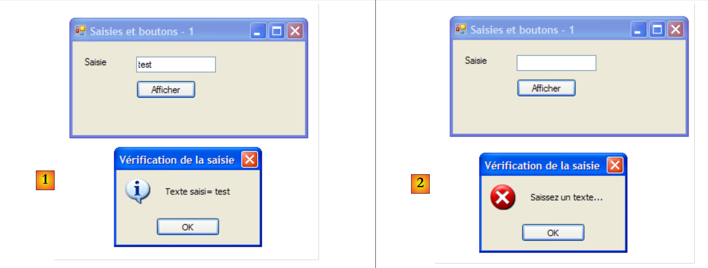 |
El código para lograrlo podría ser el siguiente:
private void buttonAfficher_Click(object sender, EventArgs e) {
// displays the text entered in the TextBox textboxSaisie
string texte = textBoxSaisie.Text.Trim();
if (texte.Length != 0) {
MessageBox.Show("Texte saisi= " + texte, "Vérification de la saisie", MessageBoxButtons.OK, MessageBoxIcon.Information);
} else {
MessageBox.Show("Saissez un texte...", "Vérification de la saisie", MessageBoxButtons.OK, MessageBoxIcon.Error);
}
La clase MessageBox se utiliza para mostrar mensajes en una ventana. Aquí hemos utilizado el método Show:
public static DialogResult Show(string text, string caption, MessageBoxButtons buttons, MessageBoxIcon icon);
con
el mensaje que se va a mostrar | |
título de la ventana | |
botones de la ventana | |
el icono en el |
Los botones pueden tomar sus valores de las siguientes constantes (precedidas por MessageBoxButtons, como se muestra en la línea 7) arriba:
botones | |
 | |
 | |
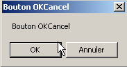 | |
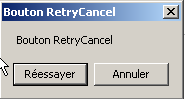 | |
 | |
 |
El icono puede tomar sus valores de las siguientes constantes (precedidas por «MessageBoxIcon», tal y como se muestra en la línea 10) anteriores:
 | ídem Parada | ||
ídem Advertencia |  | ||
ídem Asterisco | 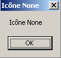 | ||
 | ídem Mano | ||
 |
El método Show es un método estático que devuelve un resultado de tipo [System.Windows.Forms.DialogResult], que es una enumeración:

Para averiguar qué botón pulsó el usuario para cerrar el MessageBox, escribimos:
7.1.2.2. Código de gestión de eventos
Además del evento buttonAfficher_Click que hemos escrito, Visual Studio ha generado en el método InitializeComponents de [Form1.Designer.cs], que crea e inicializa los componentes del formulario, la siguiente línea:
this.buttonAfficher.Click += new System.EventHandler(this.buttonAfficher_Click);
Click es una clase de evento del botón [1, 2, 3]:
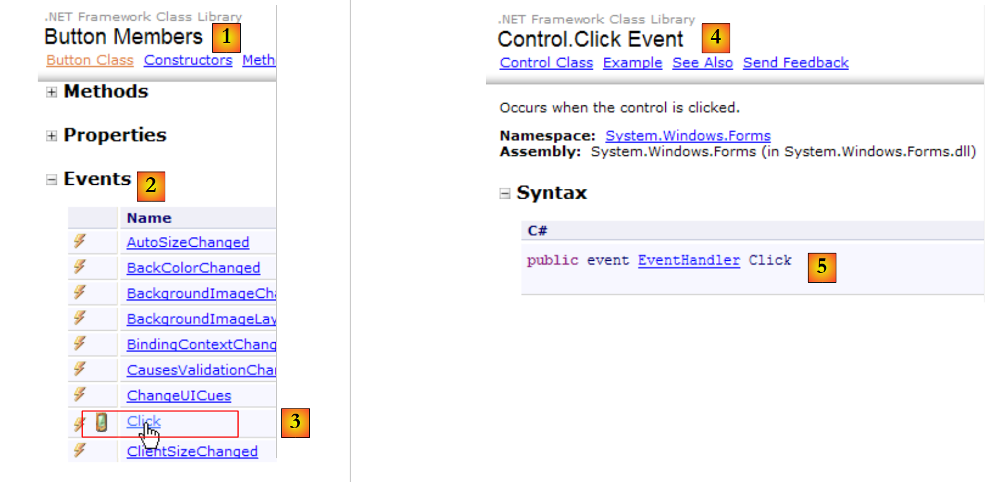 |
- [5]: la declaración del evento [Control.Click] [4]. Esto muestra que el evento Click no es específico de la clase [Button]. Pertenece a la clase [Control], la clase padre de la clase [Button].
- EventHandler es un prototipo (un modelo) de un método denominado delegado. Volveremos sobre esto más adelante.
- event es una palabra clave que restringe la funcionalidad del delegado EventHandler: un objeto delegado tiene una funcionalidad más amplia que un evento.
Visita el delegado EventHandler, que se define de la siguiente manera:
 |
El diseño del manipulador de eventos (EventHandler) de la visita designa un modelo de método:
- con el tipo como primer parámetro Object
- cuyo segundo parámetro es un EventArgs
- que no devuelve ningún resultado
Este es el caso del método para gestionar los clics en el botón Afficher generado por Visual Studio:
private void buttonAfficher_Click(object sender, EventArgs e);
buttonAfficher_Click corresponde al prototipo definido por EventHandler. Para crear un EventHandler, proceda de la siguiente manera:
EventHandler evtHandler=new EventHandler(méthode correspondant au prototype défini par le type EventHandler);
Dado que el botón Afficher_Click corresponde al prototipo definido por el EventHandler, podemos escribir:
Una variable de tipo delegado es, de hecho, una lista de referencias a métodos como el delegado. Para añadir un nuevo método M a la variable evtHandler anterior, utilizamos la sintaxis:
La notación += se puede utilizar incluso si evtHandler es una lista vacía.
Volvamos a la línea de [InitializeComponent] que añade un controlador de eventos al evento Click del objeto buttonAfficher:
this.buttonAfficher.Click += new System.EventHandler(this.buttonAfficher_Click);
Esta instrucción añade un EventHandler a la lista de métodos de buttonAfficher.Click. Estos métodos se invocarán cada vez que se detecte un clic en el componente buttonAfficher. A menudo solo hay uno. Se denomina «controlador de eventos».
Volvamos a la firma de EventHandler:
private delegate void EventHandler(object sender, EventArgs e);
El segundo parámetro del delegado es un objeto de tipo EventArgs o una clase derivada. El tipo EventArgs es muy general y, en realidad, no proporciona ninguna información sobre el evento que se ha producido. Para un clic en un botón, esto es suficiente. Para un movimiento del ratón en un formulario, tendríamos un MouseMove de la clase [Form] definido por:
El delegado MouseEventHandler se define como:
 |
Esta es una función de firma delegada void f (object, MouseEventArgs). La clase MouseEventArgs se define mediante:
 |
La clase MouseEventArgs es más completa que EventArgs. Por ejemplo, podemos averiguar las coordenadas X e Y del ratón en el momento en que se produce el evento.
7.1.2.3. Conclusión
A partir de los dos proyectos estudiados, podemos concluir que, una vez creada la interfaz gráfica de usuario (GUI) con Visual Studio, la tarea del desarrollador consiste principalmente en escribir los controladores de eventos que desea gestionar para dicha GUI. Visual Studio genera el código automáticamente. Este código, que puede resultar complejo, puede ignorarse en un primer momento. Sin embargo, más adelante, su estudio puede proporcionar una mejor comprensión de cómo crear y gestionar formularios.
7.2. Componentes básicos
A continuación, presentamos una serie de aplicaciones que incluyen los componentes más comunes, con el fin de descubrir sus principales métodos y propiedades. Para cada aplicación, mostramos la interfaz gráfica y el código de interés, principalmente el de los controladores de eventos.
7.2.1. Formulario Formulario
Comenzaremos presentando el componente esencial: el formulario en el que se colocan los componentes. Ya hemos presentado algunas de sus propiedades básicas. A continuación, veremos algunos de los eventos más importantes del formulario.
El formulario se está cargando | |
el formulario se está cerrando | |
el formulario está cerrado |
El evento Load se produce antes de que se muestre el formulario. El evento Closing se produce cuando se está cerrando el formulario. También es posible detener este cierre mediante programación.
Creamos un formulario de nombre Form1 sin componentes:
 |
- [1]: el formulario
- [2]: los tres eventos tratados
El código de [Form1.cs] es el siguiente:
using System;
using System.Windows.Forms;
namespace Chap5 {
public partial class Form1 : Form {
public Form1() {
InitializeComponent();
}
private void Form1_Load(object sender, EventArgs e) {
// initial form loading
MessageBox.Show("Evt Load", "Load");
}
private void Form1_FormClosing(object sender, FormClosingEventArgs e) {
// the form is closing
MessageBox.Show("Evt FormClosing", "FormClosing");
// confirmation requested
DialogResult réponse = MessageBox.Show("Voulez-vous vraiment quitter l'application", "Closing", MessageBoxButtons.YesNo, MessageBoxIcon.Question);
if (réponse == DialogResult.No)
e.Cancel = true;
}
private void Form1_FormClosed(object sender, FormClosedEventArgs e) {
// the form will be closed
MessageBox.Show("Evt FormClosed", "FormClosed");
}
}
}
Utilizamos el MessageBox para recibir notificaciones de eventos.
línea 10: El evento Load se producirá cuando la aplicación, incluso antes de que se muestre el formulario: |  |
línea 15: El evento FormClosing se producirá cuando el usuario cierre la ventana. | 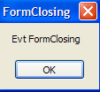 |
línea 19: A continuación, le preguntamos si realmente quiere salir el : |  |
línea 20: Si responde No, establecemos la propiedad Cancel del el evento CancelEventArgs e que el método recibió en parámetro. Si establecemos esta propiedad en False, el cierre de la ventana se cancela; de lo contrario, continúa. A continuación, se producirá el evento FormClosed se producirá entonces: |  |
7.2.2. Etiquetas y cuadros de entrada TextBox
Ya nos hemos encontrado con estos dos componentes. Label es un componente de texto y TextBox un componente de campo de entrada. Su propiedad principal es Text, que designa bien el contenido del campo de entrada, bien el texto de la etiqueta. Esta propiedad es de lectura y escritura.
El evento que se suele utilizar con los cuadros de texto (TextBox) es TextChanged, que indica que el usuario ha modificado el campo de entrada. A continuación se muestra un ejemplo en el que se utiliza TextChanged para realizar un seguimiento de los cambios en un campo de entrada:
 |
n.º | tipo | nombre | función |
1 | Cuadro de texto | textBoxSaisie | campo de entrada |
2 | Etiqueta | etiqueta de control | muestra el texto de 1 en tiempo real AutoSize=False, Text=(nada) |
3 | Botón | botónBorrar | para borrar los campos 1 y 2 |
4 | Botón | botónQuitter | para salir de la aplicación |
El código de esta aplicación es:
using System.Windows.Forms;
namespace Chap5 {
public partial class Form1 : Form {
public Form1() {
InitializeComponent();
}
private void textBoxSaisie_TextChanged(object sender, System.EventArgs e) {
// the content of TextBox has changed - copy it to Label labelControle
labelControle.Text = textBoxSaisie.Text;
}
private void buttonEffacer_Click(object sender, System.EventArgs e) {
// delete the contents of the input box
textBoxSaisie.Text = "";
}
private void buttonQuitter_Click(object sender, System.EventArgs e) {
// click on the Quit button - exit the application
Application.Exit();
}
private void Form1_Shown(object sender, System.EventArgs e) {
// focus on the input field
textBoxSaisie.Focus();
}
}
}
- línea 24: el evento [Form].Shown se produce cuando se muestra el formulario
- línea 26: el foco (para la entrada) se coloca en el componente textBoxSaisie.
- línea 9: el evento [TextBox].TextChanged se produce cada vez que cambia el contenido de un componente TextBox
- línea 11: el contenido del componente [TextBox] se copia al componente [Label]
- línea 14: gestiona el clic en el botón [Delete]
- línea 16: colocamos la cadena vacía en el componente [TextBox]
- línea 19: gestiona el clic en el botón [Quit]
- línea 21: para detener la aplicación en ejecución. Recuerda que Application se utiliza para iniciar la aplicación en el método [Main] de [Form1.cs]:
static void Main() {
Application.EnableVisualStyles();
Application.SetCompatibleTextRenderingDefault(false);
Application.Run(new Form1());
}
El siguiente ejemplo utiliza un cuadro de texto multilínea:
 |
La lista de controles es la siguiente:
n.º | tipo | nombre | función |
1 | Cuadro de texto | textBoxLines | campo de entrada multilínea Multiline=true, ScrollBars=Both, AcceptReturn=True, AcceptTab=True |
2 | TextBox | textBoxLigne | campo de entrada de una sola línea |
3 | Botón | botónAñadir | Añade el contenido de 2 a 1 |
Para que un TextBox sea multilínea, configure las siguientes propiedades del control:
para que admita varias líneas de texto | |
para solicitar que el control tenga barras de desplazamiento (Horizontal, Vertical, Both) o no (None) | |
si es igual a true, la tecla Intro saltará a la línea | |
si es verdadero, la tecla Tab generará una tabulación en el texto |
La aplicación permite escribir líneas directamente en [1] o añadirlas a través de [2] y [3].
El código de la aplicación es el siguiente:
using System.Windows.Forms;
using System;
namespace Chap5 {
public partial class Form1 : Form {
public Form1() {
InitializeComponent();
}
private void buttonAjouter_Click(object sender, System.EventArgs e) {
// add the content of textBoxLigne to that of textBoxLignes
textBoxLignes.Text += textBoxLigne.Text+Environment.NewLine;
textBoxLigne.Text = "";
}
private void Form1_Shown(object sender, EventArgs e) {
// focus on the input field
textBoxLigne.Focus();
}
}
}
- línea 18: cuando se muestra el formulario (evt Shown), se establece el foco en el campo de entrada textBoxLigne
- línea 10: gestiona el clic en el botón [Añadir]
- línea 12: el texto del campo de entrada textBoxLigne se añade al texto del campo de entrada textBoxLignes seguido de un salto de línea.
- línea 13: se elimina el campo de entrada textBoxLigne
7.2.3. Listas desplegables ComboBox
Creamos el siguiente formulario:
 |
n.º | tipo | nombre | función |
1 | ComboBox | comboNombres | contiene cadenas de caracteres DropDownStyle=DropDownList |
Un componente ComboBox es una lista desplegable con un campo de entrada: el usuario puede seleccionar un elemento en (2) o escribir texto en (1). Existen tres tipos de ComboBox que se definen mediante la propiedad DropDownStyle:
lista no desplegable con zona de edición | |
lista desplegable con zona de edición | |
lista desplegable sin zona de edición |
Por defecto, el tipo de un ComboBox es DropDown.
La clase ComboBox de un único fabricante:
crea un cuadro combinado vacío |
Los elementos de ComboBox están disponibles en la propiedad Items:
Se trata de una propiedad indexada, donde Items[i] designa el elemento i del Combo. Es de solo lectura.
O bien, C es un combo y C.Items es su lista de elementos. Tenemos las siguientes propiedades:
número de elementos del combo | |
elemento i del combo | |
añade el objeto o como último elemento del combo | |
añade una matriz de objetos al final de un combo | |
añade el objeto o a la posición i del combo | |
elimina el elemento i del combo | |
elimina el objeto o del combo | |
elimina todos los elementos del combo | |
devuelve la posición i del objeto o en el combo | |
índice del elemento seleccionado | |
elemento seleccionado | |
texto que se muestra para el elemento seleccionado | |
texto que se muestra para el elemento seleccionado |
Puede resultar sorprendente que un cuadro combinado pueda contener objetos mientras muestra visualmente cadenas de caracteres. Si un cuadro combinado contiene un objeto obj, muestra la cadena obj.ToString(). Recuerda que cada objeto tiene un método ToString heredado del objeto que genera una cadena de caracteres «representativa» del objeto.
El elemento seleccionado en el cuadro combinado C es C.SelectedItem o C.Items[C.SelectedIndex], donde C.SelectedIndex es el número del elemento seleccionado, empezando por cero para el primer elemento. El texto seleccionado se puede obtener de varias formas: C.SelectedItem.Text, C.Text
Cuando se selecciona un elemento de la lista desplegable, se dispara el evento SelectedIndexChanged, que puede utilizarse para notificar al usuario un cambio en la selección del combo. En la siguiente aplicación, utilizamos este evento para mostrar el elemento que se ha seleccionado en la lista.
 |
El código de la aplicación es el siguiente:
using System.Windows.Forms;
namespace Chap5 {
public partial class Form1 : Form {
private int previousSelectedIndex=0;
public Form1() {
InitializeComponent();
// combo filling
comboBoxNombres.Items.AddRange(new string[] { "zéro", "un", "deux", "trois", "quatre" });
// select item no. 0
comboBoxNombres.SelectedIndex = 0;
}
private void comboBoxNombres_SelectedIndexChanged(object sender, System.EventArgs e) {
int newSelectedIndex = comboBoxNombres.SelectedIndex;
if (newSelectedIndex != previousSelectedIndex) {
// the selected item has changed - it is displayed
MessageBox.Show(string.Format("Elément sélectionné : ({0},{1})", comboBoxNombres.Text, newSelectedIndex), "Combo", MessageBoxButtons.OK, MessageBoxIcon.Information);
// note the new index
previousSelectedIndex = newSelectedIndex;
}
}
}
}
- línea 5: previousSelectedIndex almacena el último índice seleccionado en el cuadro combinado
- línea 10: rellena el cuadro combinado con una matriz de cadenas de caracteres
- línea 12: se selecciona el primer elemento
- línea 15: el método que se ejecuta cada vez que el usuario selecciona un elemento del cuadro combinado. Al contrario de lo que podría sugerir el nombre, este evento tiene lugar incluso si el elemento seleccionado es el mismo que el anterior.
- línea 16: anota el índice del elemento seleccionado
- línea 17: si es diferente del anterior
- línea 19: muestra el número y el texto del elemento seleccionado
- línea 21: anota el nuevo índice
7.2.4. Componente ListBox
Proponemos crear la siguiente interfaz:
 |
Los componentes de esta ventana son los siguientes:
n.º | tipo | nombre | función/propiedades |
0 | Formulario | Form1 | formulario FormBorderStyle=FixedSingle (marco no redimensionable) |
1 | Cuadro de texto | campo de texto de entrada | campo de entrada |
2 | Botón | botónAñadir | botón para añadir el contenido del campo de entrada [1] a la lista [3] |
3 | ListBox | listBox1 | lista 1 SelectionMode=MultiExtended : |
4 | Cuadro de lista | listBox2 | lista 2 Modo de selección=Múltiple simple : |
5 | Botón | botón1a2 | transfiere los elementos seleccionados de la lista 1 a la lista 2 |
6 | Botón | botón2a1 | hace lo contrario |
7 | Botón | botónEffacer1 | vacía la lista 1 |
8 | Botón | botónBorrar2 | vacía la lista 2 |
Los componentes ListBox tienen un modo de selección de sus elementos que se define mediante su propiedad SelectionMode:
solo se puede seleccionar un elemento | |
es posible la selección múltiple: al mantener pulsada la tecla SHIFT y hacer clic en un elemento, la selección se amplía desde el elemento seleccionado anteriormente hasta el elemento actual. | |
posibilidad de selección múltiple: se puede seleccionar o deseleccionar un elemento con un clic del ratón o pulsando la barra espaciadora. |
- El usuario escribe texto en el campo 1 y lo añade a la lista 1 mediante el botón Añadir (2). A continuación, el campo de entrada (1) se vacía y el usuario puede añadir un nuevo elemento.
- Puede transferir elementos de una lista a otra seleccionando el elemento que se va a transferir en una de las listas y eligiendo el botón de transferencia correspondiente 5 o 6. El elemento transferido se añade al final de la lista de destino y se elimina de la lista de origen.
- Puede hacer doble clic en un elemento de la lista 1. Este elemento se transfiere entonces al cuadro de edición y se elimina de la lista 1.
Los botones se activan o desactivan según las siguientes reglas:
- el botón Añadir solo se ilumina si hay texto en el campo de entrada
- el botón [5] para transferir la lista 1 a la lista 2 solo está iluminado si hay un elemento seleccionado en la lista 1
- el botón [6] para transferir la lista 2 a la lista 1 solo se ilumina si hay un elemento seleccionado en la lista 2
- los botones [7] y [8] para eliminar las listas 1 y 2 solo se iluminan si la lista que se va a eliminar contiene elementos.
En las condiciones anteriores, todos los botones deben estar desactivados al iniciar la aplicación. Se trata de los botones habilitados, que deben establecerse en «false». Esto puede hacerse en la fase de diseño, lo que generará el código correspondiente en InitializeComponent, o bien hacerlo nosotros mismos en el generador, como se muestra a continuación:
public Form1() {
InitializeComponent();
// --- initialisations complémentaires ---
// on inhibe un certain nombre de boutons
buttonAjouter.Enabled = false;
button1vers2.Enabled = false;
button2vers1.Enabled = false;
buttonEffacer1.Enabled = false;
buttonEffacer2.Enabled = false;
}
El estado del botón «Añadir» viene determinado por el contenido del campo de entrada. Se trata del evento TextChanged, que nos permite realizar un seguimiento de los cambios en este contenido:
private void textBoxSaisie_TextChanged(object sender, System.EventArgs e) {
// the content of textBoxSaisie has changed
// the Add button is only lit if the entry is non-empty
buttonAjouter.Enabled = textBoxSaisie.Text.Trim() != "";
}
El estado de los botones de transferencia depende de si se ha seleccionado o no un elemento en la lista que controlan:
private void listBox1_SelectedIndexChanged(object sender, System.EventArgs e) {
// an item has been selected
// switch on the 1 to 2 transfer button
button1vers2.Enabled = true;
}
private void listBox2_SelectedIndexChanged(object sender, System.EventArgs e) {
// an item has been selected
// switch on the 2 to 1 transfer button
button2vers1.Enabled = true;
}
El código asociado al clic en «Añadir» es el siguiente:
private void buttonAjouter_Click(object sender, System.EventArgs e) {
// add a new element to list 1
listBox1.Items.Add(textBoxSaisie.Text.Trim());
// raz de la saisie
textBoxSaisie.Text = "";
// List 1 is not empty
buttonEffacer1.Enabled = true;
// return focus to input box
textBoxSaisie.Focus();
}
Fíjate en el comando Focus para centrar el foco en un control del formulario. El código asociado a los clics del botón Eliminar:
private void buttonEffacer1_Click(object sender, System.EventArgs e) {
// delete list 1
listBox1.Items.Clear();
// delete button
buttonEffacer1.Enabled = false;
}
private void buttonEffacer2_Click(object sender, System.EventArgs e) {
// delete list 2
listBox2.Items.Clear();
// delete button
buttonEffacer2.Enabled = false;
}
El código para transferir los elementos seleccionados de una lista a otra:
private void button1vers2_Click(object sender, System.EventArgs e) {
// transfer the item selected in List 1 to List 2
transfert(listBox1, button1vers2, buttonEffacer1, listBox2, button2vers1, buttonEffacer2);
}
private void button2vers1_Click(object sender, System.EventArgs e) {
// transfer the item selected in List 2 to List 1
transfert(listBox2, button2vers1, buttonEffacer2, listBox1, button1vers2, buttonEffacer1);
}
Los dos métodos anteriores delegan la transferencia de elementos seleccionados de una lista a otra a un único método privado llamado transfer :
// transfer
private void transfert(ListBox l1, Button button1vers2, Button buttonEffacer1, ListBox l2, Button button2vers1, Button buttonEffacer2) {
// transfer selected items from list l1 to list l2
for (int i = l1.SelectedIndices.Count - 1; i >= 0; i--) {
// index of selected item
int index = l1.SelectedIndices[i];
// addition to l2
l2.Items.Add(l1.Items[index]);
// deletion in l1
l1.Items.RemoveAt(index);
}
// delete buttons
buttonEffacer2.Enabled = l2.Items.Count != 0;
buttonEffacer1.Enabled = l1.Items.Count != 0;
// transfer buttons
button1vers2.Enabled = false;
}
- línea b: el método transfer recibe seis parámetros:
- una referencia a la lista que contiene los elementos seleccionados, denominada aquí l1. Cuando se ejecuta la aplicación, l1 es listBox1 o listBox2. En las líneas 3 y 8 del procedimiento de transferencia buttonXversY_Click se muestran ejemplos de llamadas.
- una referencia al botón de transferencia vinculado a la lista l1. Por ejemplo, si l1 es listBox2, será button2to1 (véase la llamada en la línea 8)
- una referencia al botón de borrar de la lista l1. Por ejemplo, si l1 es listBox1, será buttonEffacer1 (véase la llamada en la línea 3)
- las otras tres referencias son similares, pero se refieren a l2.
- línea d: la colección [ListBox].SelectedIndices representa los índices de los elementos seleccionados en el componente [ListBox]. Esto es un:
- [ListBox].SelectedIndices.Count es el número de elementos de esta colección
- [ListBox].SelectedIndices[i] es el elemento n.º i de esta colección
Recorremos la colección en orden inverso, empezando por el final y terminando por el principio. Explicaremos por qué.
- línea f: índice de un elemento seleccionado en la lista l1
- línea h: este elemento se añade a la lista l2
- línea j: y eliminado de la lista l1. Al haber sido eliminado, ya no está seleccionado. Se volverá a calcular la colección l1.SelectedIndices de la línea d. Perderá el elemento que acaba de eliminarse. Todos los elementos posteriores verán cómo su número cambia de n a n-1.
- Si el bucle de la línea (d) es ascendente y acaba de procesar el elemento n.º 0, procesará a continuación el elemento n.º 1. O bien, el elemento que era el n.º 1 antes de la eliminación del elemento n.º 0 pasará a ser el n.º 0. A continuación, el bucle lo olvidará.
- Si el bucle de la línea (d) es descendente y acaba de procesar el elemento n.º n, procesará a continuación el elemento n.º n-1. Tras eliminar el elemento n.º n, el elemento n.º n-1 no cambia de número. Por lo tanto, se procesa en el siguiente bucle.
- líneas m-n: el estado de los botones [Eliminar] depende de si hay o no elementos presentes en las listas asociadas
- línea p: la lista l2 ya no tiene elementos seleccionados: desactivar su botón de transferencia.
7.2.5. Casillas de verificación CheckBox, botones de opción ButtonRadio
Proponemos escribir la siguiente aplicación:
 |
Los componentes de la ventana son los siguientes:
n.º | tipo | nombre | función |
1 | GroupBox cf [6] | groupBox1 | un contenedor de componentes. Se pueden colocar otros componentes en él. Texto=Botones de radio |
2 | Botón de radio | radioButton1 radioButton2 radioButton3 | 3 botones de opción: radioButton1 tiene Checked=True y Text=1; radioButton2 tiene Text=2; radioButton3 tiene Text=3 Los botones de opción del mismo contenedor, en este caso el GroupBox, son mutuamente excluyentes: solo uno de ellos está activado. |
3 | GroupBox | groupBox2 | |
4 | Casilla de verificación | casilla de verificación1 casilla de verificación 2 casilla3 | 3 casillas de verificación. La casilla de verificación 1 tiene Checked=True y Text=A; la casilla de verificación 2 tiene Text=B; la casilla de verificación 3 tiene Text=C |
5 | ListBox | listBoxValeurs | una lista que muestra los valores de los botones de opción y las casillas de verificación cada vez que se produce un cambio. |
6 | muestra dónde se encuentra el contenedor GroupBox |
El evento de interés para estos seis controles es CheckChanged, que indica que el estado de la casilla de verificación o del botón de opción ha cambiado. En ambos casos, este estado viene representado por la propiedad booleana Checked, que significa realmente que el control está marcado. Aquí utilizaremos un único método para gestionar los seis eventos CheckChanged: el método poster. Para garantizar que los seis eventos CheckChanged sean gestionados por el mismo método poster, puede proceder de la siguiente manera:
Selecciona el componente «radioButton1» y haz clic con el botón derecho del ratón sobre él para acceder a sus propiedades:
 |
En los eventos [1], asociamos el método poster [2] al evento CheckChanged. Esto significa que queremos que, al hacer clic en la opción A1, se procese mediante un método llamado poster. Visual Studio genera automáticamente el método poster en la ventana de código:
private void affiche(object sender, EventArgs e) {
}
El método affiche es un EventHandler.
Para los otros cinco componentes, hacemos lo mismo. Por ejemplo, seleccionemos la opción CheckBox1 y sus eventos [3]. Frente al evento Click, tenemos una lista desplegable [4] que contiene los métodos existentes que pueden procesar este evento. En este caso, solo el método affiche. Lo seleccionamos. Repetimos este proceso para todos los demás componentes.
Se ha generado el código del método InitializeComponent. El método affiche ha sido declarado como el controlador de los seis eventos CheckedChanged de la siguiente manera:
this.radioButton1.CheckedChanged += new System.EventHandler(this.affiche);
this.radioButton2.CheckedChanged += new System.EventHandler(this.affiche);
this.radioButton3.CheckedChanged += new System.EventHandler(this.affiche);
this.checkBox1.CheckedChanged += new System.EventHandler(this.affiche);
this.checkBox2.CheckedChanged += new System.EventHandler(this.affiche);
this.checkBox3.CheckedChanged += new System.EventHandler(this.affiche);
El método poster se completa de la siguiente manera:
private void affiche(object sender, System.EventArgs e) {
// displays radio button or checkbox status
// is it a checkbox?
if (sender is CheckBox) {
CheckBox chk = (CheckBox)sender;
listBoxvaleurs.Items.Add(chk.Name + "=" + chk.Checked);
}
// is it a radiobutton?
if (sender is RadioButton) {
RadioButton rdb = (RadioButton)sender;
listBoxvaleurs.Items.Add(rdb.Name + "=" + rdb.Checked);
}
}
La sintaxis
if (sender is CheckBox) {
se utiliza para comprobar que el tipo del emisor es CheckBox. Esto nos permite entonces realizar una conversión de tipo al tipo exacto del emisor. El método poster escribe en listBoxValeurs el nombre del componente que provoca el evento y el valor de su propiedad Checked . En tiempo de ejecución [7], al hacer clic en un botón de opción se desencadenan dos eventos CheckChanged: uno en el botón que estaba marcado, que pasa a «desmarcado», y otro en el nuevo botón, que pasa a «marcado».
7.2.6. Inversores ScrollBar
Existen varios tipos de control: la barra de desplazamiento horizontal (HscrollBar), el control vertical (VscrollBar), el incrementador (NumericUpDown). | 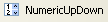 |
Ejecutemos la siguiente aplicación:
 |
n.º | tipo | nombre | función |
1 | hScrollBar | hScrollBar1 | una barra de desplazamiento horizontal |
2 | hScrollBar | hScrollBar2 | un variador horizontal que sigue las variaciones del variador 1 |
3 | Etiqueta | labelValeurHS1 | muestra el valor del accionamiento horizontal |
4 | NuméricoArribaAbajo | numericUpDown2 | para ajustar el valor del controlador 2 |
Una barra de desplazamiento inversa permite al usuario seleccionar un valor de un rango de valores enteros, representados por la «banda» de control por la que se desplaza el cursor. El valor de control está disponible en su propiedad Value.
- En el caso de un controlador horizontal, el extremo izquierdo representa el valor mínimo del rango, el extremo derecho el valor máximo y el cursor el valor seleccionado actualmente. En el caso de un controlador vertical, el mínimo está representado por el extremo superior y el máximo por el extremo inferior. Estos valores están representados por las propiedades Minimum y Maximum y tienen un valor predeterminado de 0 y 100.
- Al hacer clic en los extremos del controlador, el valor cambia en un incremento (positivo o negativo) dependiendo del extremo en el que se haga clic (SmallChange), cuyo valor predeterminado es 1.
- Al hacer clic a ambos lados del cursor, el valor cambia en un incremento (positivo o negativo), dependiendo de en qué extremo se haga clic (LargeChange), cuyo valor predeterminado es 10.
- Al hacer clic en el extremo superior de un regulador vertical, su valor disminuye. Esto puede resultar sorprendente para el usuario medio, que normalmente espera que el valor «aumente». Este problema se resuelve asignando un valor negativo a las propiedades SmallChange y LargeChange
- Estas cinco propiedades (Value, Minimum, Maximum, SmallChange, LargeChange) son accesibles para lectura y escritura.
- El evento principal del control es el que señala un cambio de valor: el Scroll.
Un componente NumericUpDown es similar al del control: también tiene las siguientes propiedades: Minimum, Maximum y Value, cuyos valores por defecto son 0, 100 y 0. Pero aquí, el valor se muestra en un cuadro de entrada que forma parte integrante del control. El propio usuario puede modificar este valor a menos que la propiedad ReadOnly del control esté establecida en true. El valor de incremento se establece mediante la propiedad Incrementally, cuyo valor predeterminado es 1. El evento principal del componente NumericUpDown es el que señala un cambio de valor: el evento ValueChanged
El código de la aplicación es el siguiente:
using System.Windows.Forms;
namespace Chap5 {
public partial class Form1 : Form {
public Form1() {
InitializeComponent();
// set the characteristics of drive 1
hScrollBar1.Value = 7;
hScrollBar1.Minimum = 1;
hScrollBar1.Maximum = 130;
hScrollBar1.LargeChange = 11;
hScrollBar1.SmallChange = 1;
// drive 2 is given the same characteristics as drive 1
hScrollBar2.Value = hScrollBar1.Value;
hScrollBar2.Minimum = hScrollBar1.Minimum;
hScrollBar2.Maximum = hScrollBar1.Maximum;
hScrollBar2.LargeChange = hScrollBar1.LargeChange;
hScrollBar2.SmallChange = hScrollBar1.SmallChange;
// ditto for the incrementer
numericUpDown2.Value = hScrollBar1.Value;
numericUpDown2.Minimum = hScrollBar1.Minimum;
numericUpDown2.Maximum = hScrollBar1.Maximum;
numericUpDown2.Increment = hScrollBar1.SmallChange;
// the Label is given the value of drive 1
labelValeurHS1.Text = hScrollBar1.Value.ToString();
}
private void hScrollBar1_Scroll(object sender, ScrollEventArgs e) {
// value change on drive 1
// its value is passed on to drive 2 and to the label
hScrollBar2.Value = hScrollBar1.Value;
labelValeurHS1.Text = hScrollBar1.Value.ToString();
}
private void numericUpDown2_ValueChanged(object sender, System.EventArgs e) {
// incrementer has changed value
// set the value of controller 2
hScrollBar2.Value = (int)numericUpDown2.Value;
}
}
}
7.3. Eventos ratón
Al dibujar en un contenedor, es importante conocer la posición del ratón para que, por ejemplo, se pueda mostrar un punto al hacer clic. Los movimientos del ratón activan eventos en el contenedor por el que se desplaza.
 |
- [1]: eventos que se producen al mover el ratón sobre un formulario o un control
- [2]: eventos que se producen durante la acción de arrastrar y soltar (Drag'nDrop)
el ratón ha entrado en el campo del control | |
el ratón acaba de salir del dominio del control | |
el ratón se está moviendo dentro del área del control | |
Se ha pulsado el botón izquierdo del ratón | |
Soltar el botón izquierdo del ratón | |
El usuario suelta un objeto sobre el control | |
El usuario entra en el dominio del control arrastrando un objeto | |
el usuario sale del dominio del control arrastrando un objeto | |
el usuario pasa por encima del dominio de control arrastrando un objeto |
Aquí tienes una aplicación que te ayudará a comprender cuándo se producen los diferentes eventos del ratón:
 |
n.º | tipo | nombre | función |
1 | Etiqueta | lblPositionSouris | para mostrar la posición del ratón en el formulario 1, la lista 2 o el botón 3 |
2 | ListBox | listBoxEvts | para mostrar eventos del ratón distintos de MouseMove |
3 | Botón | buttonEffacer | para borrar el contenido de 2 |
Para seguir los movimientos del ratón en los tres controles, escribimos un único controlador, el poster :
 |
El código del procedimiento poster es el siguiente:
private void affiche(object sender, MouseEventArgs e) {
// mvt mouse - displays its (X,Y) coordinates
labelPositionSouris.Text = "(" + e.X + "," + e.Y + ")";
}
Cada vez que el ratón entra en el ámbito de un control, su sistema de coordenadas cambia. Su origen (0,0) es la esquina superior izquierda del control en el que se encuentra. Así, en tiempo de ejecución, cuando mueves el ratón desde el formulario al botón, puedes ver claramente el cambio en las coordenadas. Para ver mejor estos cambios en el ámbito del ratón, puedes utilizar los controles del cursor [1]:
 |
Esta propiedad se utiliza para establecer la forma del cursor del ratón cuando entra en el dominio del control. En nuestro ejemplo, establecemos el cursor en Predeterminado para el propio formulario [2], Mano para la lista 2 [3] y Cruz para el botón 3 [4].
Además, para detectar la entrada y salida del ratón en la lista 2, procesamos los eventos MouseEnter y MouseLeave de la misma lista:
private void listBoxEvts_MouseEnter(object sender, System.EventArgs e) {
// the event
listBoxEvts.Items.Insert(0, string.Format("MouseEnter à {0:hh:mm:ss}",DateTime.Now));
}
private void listBoxEvts_MouseLeave(object sender, EventArgs e) {
// the event
listBoxEvts.Items.Insert(0, string.Format("MouseLeave à {0:hh:mm:ss}", DateTime.Now));
}
Para gestionar los clics en el formulario, procesamos los siguientes eventos: MouseDown y MouseUp:
private void listBoxEvts_MouseDown(object sender, MouseEventArgs e) {
// the event
listBoxEvts.Items.Insert(0, string.Format("MouseDown à {0:hh:mm:ss}", DateTime.Now));
}
private void listBoxEvts_MouseUp(object sender, MouseEventArgs e) {
// the event
listBoxEvts.Items.Insert(0, string.Format("MouseUp à {0:hh:mm:ss}", DateTime.Now));
}
- líneas 3 y 8: los mensajes se colocan en la primera posición del ListBox para que los eventos más recientes aparezcan primero.
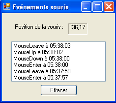 |
Por último, el código para el controlador de clic del botón «Eliminar»:
private void buttonEffacer_Click(object sender, EventArgs e) {
listBoxEvts.Items.Clear();
}
7.4. Crear una ventana con menú
Ahora veamos cómo crear una ventana con un menú. Crearemos la siguiente ventana:
 |
Para crear un menú, selecciona «MenuStrip» en la barra «Menús y barras de herramientas»:
 |
- [1]: selección del componente [MenuStrip]
- [2]: aparece un menú en el formulario, con cuadros vacíos etiquetados como «Escriba aquí». Solo tiene que indicar las distintas opciones del menú.
- [3]: se ha escrito la etiqueta «Opciones A». Pasamos a la etiqueta [4].
- [5]: Se han introducido las etiquetas de la Opción A. Pasamos a la etiqueta [6]
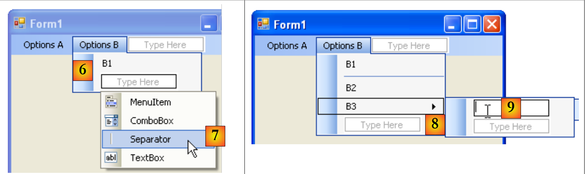 |
- [6]: las primeras opciones B
- [7]: en B1, se utiliza un separador. Está disponible en un menú desplegable asociado al texto «Escriba aquí»
- [8]: para crear un submenú, utilice la flecha [8] y escriba el submenú en [9]
Solo queda nombrar los distintos componentes del formulario:
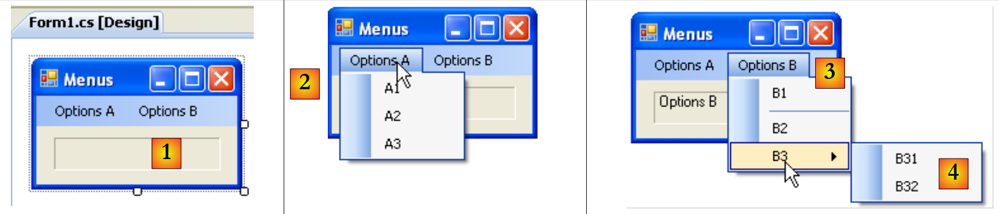 |
n.º | tipo | nombre(s) | función |
1 | Etiqueta | labelStatut | para mostrar el texto del elemento del menú de opciones en el que se ha hecho clic |
2 | toolStripMenuItem | toolStripMenuItemOptionsA elemento de menú de la barra de herramientas A1 elemento de menú de la barra de herramientas A2 elemento del menú de la barra de herramientas A3 | opciones de menú bajo la opción principal «Opciones A» |
3 | elemento del menú de la barra de herramientas | elemento del menú de la barra de herramientas Opciones B elemento del menú de la barra de herramientas B1 elemento del menú de la barra de herramientas B2 elemento de menú de la barra de herramientas B3 | opciones de menú bajo la opción principal «Opciones B» |
4 | elemento del menú de la barra de herramientas | elemento de menú de la barra de herramientas B31 toolStripMenuItemB32 | opciones de menú bajo la opción principal «B3» |
Las opciones de menú son controles como cualquier otro componente visual y tienen propiedades y eventos. Por ejemplo, las propiedades del elemento de menú de la opción A1 son las siguientes:
 |
En nuestro ejemplo se utilizan dos propiedades:
nombre del control de menú | |
la etiqueta del menú de opciones |
En la estructura del menú, seleccione la opción A1 y haga clic con el botón derecho del ratón para acceder a las propiedades del control:
 |
En los eventos [1], asociamos el póster [2] al evento Click. Esto significa que queremos que, al hacer clic en la opción A1, se procese mediante un método llamado poster. Visual Studio genera automáticamente el póster en la ventana de código:
private void affiche(object sender, EventArgs e) {
}
En este método, simplemente mostraremos en la etiqueta labelStatut la propiedad Text del elemento del menú de opciones sobre el que se ha hecho clic:
private void affiche(object sender, EventArgs e) {
// displays the name of the selected submenu in the TextBox
labelStatut.Text = ((ToolStripMenuItem)sender).Text;
}
El tipo de origen del emisor del evento es object. Las opciones del menú son ToolStripMenuItem, por lo que nos vemos obligados a convertir el objeto a ToolStripMenuItem.
Para todas las opciones del menú, establecemos el controlador de clic en el método poster [3,4].
Ejecutemos la aplicación y seleccionemos un elemento del menú:
 |  |
7.5. Componentes no visuales
Ahora nos centraremos en una serie de componentes no visuales: se utilizan durante el diseño, pero no se ven en tiempo de ejecución.
7.5.1. Cuadros de diálogo , OpenFileDialog y SaveFileDialog
Vamos a crear la siguiente aplicación:
 |
Los controles son los siguientes:
N.º | tipo | nombre | función |
1 | Cuadro de texto | TextBoxLines | texto escrito por el usuario o cargado desde un archivo MultiLine=True, ScrollBars=Both, AccepReturn=True, AcceptTab=True |
2 | Botón | botónGuardar | guarda el texto de [1] en un archivo de texto |
3 | Botón | botónCargar | carga el contenido de un archivo de texto en [1] |
4 | Botón | botónBorrar | borra el contenido de [1] |
5 | SaveFileDialog | saveFileDialog1 | componente para elegir el nombre y la ubicación del archivo de copia de seguridad de [1]. Este componente se toma de la barra de herramientas [7] y simplemente se coloca en el formulario. A continuación, se guarda, pero no ocupa espacio en el formulario. Es un componente no visual. |
6 | OpenFileDialog | openFileDialog1 | para seleccionar el archivo que se va a cargar en [1]. |
El código asociado a la opción Eliminar es sencillo:
private void buttonEffacer_Click(object sender, EventArgs e) {
// we put the empty string in the TexBox
textBoxLignes.Text = "";
}
Utilizaremos las siguientes propiedades y métodos de SaveFileDialog:
Campo | Tipo | Función |
Propiedad | los tipos de archivo que se ofrecen en la lista desplegable de tipos de archivo en el | |
Propiedad | el número del tipo de archivo propuesto por defecto en la lista anterior. Empieza en 0. | |
Propiedad | la carpeta que se muestra inicialmente para guardar el archivo | |
Propiedad | el nombre del archivo de copia de seguridad especificado por el usuario | |
Método | método que muestra el cuadro de diálogo de guardado. Devuelve un resultado de tipo DialogResult. |
El método ShowDialog muestra un cuadro de diálogo similar al que se muestra a continuación:
 |
lista desplegable creada a partir del filtro. El tipo de archivo predeterminado viene establecido por FilterIndex | |
archivo actual, establecido por InitialDirectory si se ha configurado esta propiedad | |
nombre de archivo elegido o escrito directamente por el usuario. Estará disponible en el campo FileName | |
botones Guardar/Cancelar. Si se utiliza el Registro, ShowDialog devuelve el resultado DialogResult.OK |
El procedimiento de salvaguarda se puede escribir de la siguiente manera:
private void buttonSauvegarder_Click(object sender, System.EventArgs e) {
// save the input box in a text file
// set the savefileDialog1 dialog box
saveFileDialog1.InitialDirectory = Application.ExecutablePath;
saveFileDialog1.Filter = "Fichiers texte (*.txt)|*.txt|Tous les fichiers (*.*)|*.*";
saveFileDialog1.FilterIndex = 0;
// display the dialog box and retrieve the result
if (saveFileDialog1.ShowDialog() == DialogResult.OK) {
// retrieve the file name
string nomFichier = saveFileDialog1.FileName;
StreamWriter fichier = null;
try {
// open the file for writing
fichier = new StreamWriter(nomFichier);
// we write the text inside
fichier.Write(textBoxLignes.Text);
} catch (Exception ex) {
// problem
MessageBox.Show("Problème à l'écriture du fichier (" +
ex.Message + ")", "Erreur", MessageBoxButtons.OK, MessageBoxIcon.Error);
return;
} finally {
// close the file
if (fichier != null) {
fichier.Dispose();
}
}
}
}
- línea 4: establece el archivo inicial (InitialDirectory) en el archivo (Application.ExecutablePath) que contiene el ejecutable de la aplicación.
- línea 5: establece los tipos de archivo que se mostrarán. Ten en cuenta la sintaxis del filtro: filtro1|filtro2|..|filtro con filtroi= Texto|modelo de archivo. Aquí el usuario podrá elegir entre los siguientes archivos: *.txt y *.*.
- línea 6: establece el tipo de archivo que se mostrará en primer lugar al usuario. Aquí, el índice 0 designa los archivos *.txt.
- línea 8: se muestra el cuadro de diálogo y se recupera su resultado. Mientras se muestra el cuadro de diálogo, el usuario ya no tiene acceso al formulario principal (cuadro de diálogo modal). El usuario establece el nombre del archivo que se va a guardar y sale del cuadro de diálogo haciendo clic en el botón «Guardar», en «Cancelar» o cerrando el cuadro. El resultado de ShowDialog es DialogResult.OK solo si el usuario ha utilizado el botón «Guardar» para salir del cuadro de diálogo.
- Una vez hecho esto, el nombre del archivo que se va a crear se encuentra ahora en el objeto FileName saveFileDialog1. Esto nos lleva de vuelta a la creación clásica de un archivo de texto. El contenido del TextBox: textBoxLignes.Text, gestionando al mismo tiempo cualquier excepción que pueda producirse.
La clase OpenFileDialog es muy similar a SaveFileDialog. Utilizaremos los mismos métodos y propiedades que antes. El método ShowDialog muestra un cuadro de diálogo similar al siguiente:
 |
lista desplegable creada a partir del filtro. El tipo de archivo predeterminado viene establecido por FilterIndex | |
archivo actual, determinado por InitialDirectory si se ha definido esta propiedad | |
nombre de archivo elegido o escrito directamente por el usuario. Estará disponible en la propiedad FileName | |
Botones Abrir/Cancelar. Si se utiliza Abrir, ShowDialog devuelve el resultado DialogResult.OK |
El procedimiento para cargar el archivo de texto se puede escribir de la siguiente manera:
private void buttonCharger_Click(object sender, EventArgs e) {
// load a text file into the input box
// set the openfileDialog1 dialog box
openFileDialog1.InitialDirectory = Application.ExecutablePath;
openFileDialog1.Filter = "Fichiers texte (*.txt)|*.txt|Tous les fichiers (*.*)|*.*";
openFileDialog1.FilterIndex = 0;
// display the dialog box and retrieve the result
if (openFileDialog1.ShowDialog() == DialogResult.OK) {
//
string nomFichier = openFileDialog1.FileName;
StreamReader fichier = null;
try {
// retrieve the file name
fichier = new StreamReader(nomFichier);
// open the file in read mode
textBoxLignes.Text = fichier.ReadToEnd();
} catch (Exception ex) {
// read the entire file and put it in the TextBox
MessageBox.Show("Problème à la lecture du fichier (" +
ex.Message + ")", "Erreur", MessageBoxButtons.OK, MessageBoxIcon.Error);
return;
} finally {
// problem
if (fichier != null) {
fichier.Dispose();
}
}// close the file
}//finally
}
- línea 4: establece el archivo inicial (InitialDirectory) en el archivo (Application.ExecutablePath) que contiene el ejecutable de la aplicación.
- línea 5: establecer los tipos de archivo que se mostrarán. Tenga en cuenta la sintaxis del filtro: filtro1|filtro2|..|filtro con filtroi= Texto|modelo de archivo. Aquí el usuario podrá elegir entre los siguientes archivos: *.txt y *.*.
- línea 6: establece el tipo de archivo que se mostrará primero al usuario. Aquí, el índice 0 designa los archivos *.txt.
- línea 8: se muestra el cuadro de diálogo y se recupera su resultado. Mientras se muestra el cuadro de diálogo, el usuario ya no tiene acceso al formulario principal (cuadro de diálogo modal). El usuario establece el nombre del archivo que se va a guardar y sale del cuadro de diálogo haciendo clic en Abrir, en Cancelar o cerrando el cuadro. El resultado de ShowDialog es DialogResult.OK solo si el usuario ha utilizado el botón Abrir para salir del cuadro de diálogo.
- Una vez hecho esto, el nombre del archivo que se va a crear se encuentra ahora en el objeto FileName de openFileDialog1. Esto nos lleva de vuelta a la lectura clásica de un archivo de texto. Obsérvese, en la línea 16, el método para leer un archivo completo.
7.5.2. Cuadros de diálogo FontColor y ColorDialog
Continuamos con el ejemplo anterior, añadiendo dos nuevos botones y dos nuevos controles no visuales:
 |
67
N.º | tipo | nombre | función |
1 | Botón | colorDelBotón | para establecer el color de los caracteres del cuadro de texto |
2 | Botón | botónPolice | para establecer la fuente del cuadro de texto |
3 | ColorDialog | colorDialog1 | el componente para seleccionar un color, tomado de la caja de herramientas [5]. |
4 | FontDialog | colorDialog1 | el componente de selección de fuente, tomado de la caja de herramientas [5]. |
Las clases FontDialog y ColorDialog tienen un método ShowDialog similar al de las clases OpenFileDialog y SaveFileDialog de ShowDialog.
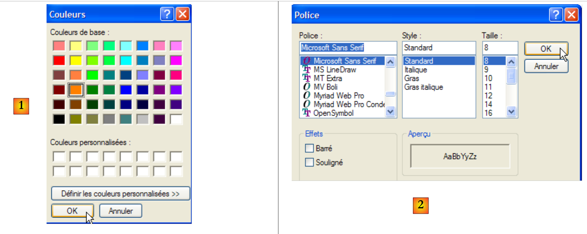 |
El método ShowDialog de la clase ColorDialog permite seleccionar un color [1]. La clase FontDialog permite seleccionar una fuente [2]:
- [1]: si el usuario sale del cuadro de diálogo pulsando Aceptar, el resultado del método ShowDialog es DialogResult.OK y el color elegido se encuentra en el objeto Color de ColorDialog utilizado.
- [2]: si el usuario sale del cuadro de diálogo pulsando Aceptar, el resultado del método ShowDialog es DialogResult.OK y la fuente elegida se encuentra en el objeto Font de FontDialog utilizado.
Ahora disponemos de los elementos necesarios para procesar los clics en los botones Color y Police :
private void buttonCouleur_Click(object sender, EventArgs e) {//if
if (colorDialog1.ShowDialog() == DialogResult.OK) {
// choice of text color
textBoxLignes.ForeColor = colorDialog1.Color;
}// change the Forecolor property of TextBox
}
private void buttonPolice_Click(object sender, EventArgs e) {
//if
if (fontDialog1.ShowDialog() == DialogResult.OK) {
// font selection
textBoxLignes.Font = fontDialog1.Font;
}
- línea [4]: la propiedad [ForeColor] de un componente TextBox designa el color de los caracteres del TextBox. En este caso, este color es el elegido por el usuario en el cuadro de diálogo [ColorDialog].
- línea [12]: la propiedad [Font] de un componente TextBox designa el tipo de letra [Font] de los caracteres del TextBox. En este caso, este tipo de letra es el elegido por el usuario en el cuadro de diálogo [FontDialog].
7.5.3. Timer
Proponemos aquí escribir la siguiente aplicación:
 |
n.º | Tipo | Nombre | Función |
1 | Etiqueta | labelChrono | muestra un cronómetro |
2 | Botón | botónArreteMarcha | botón de parada/inicio |
3 | Temporizador | timer1 | componente que emite aquí un evento cada segundo |
En [4] vemos el cronómetro en marcha, en [5] el cronómetro parado.
Para cambiar el contenido de la etiqueta LabelChrono cada segundo, necesitamos un componente que genere un evento cada segundo, el cual podamos interceptar para actualizar la visualización del cronómetro. Este componente es el Timer [1] disponible en la caja de herramientas Components [2]:
 |
Las propiedades del componente Timer utilizado aquí serán las siguientes:
número de milisegundos tras los cuales se emite un evento Tick. | |
el evento producido al final del intervalo de milisegundos | |
activa el temporizador (true) o lo desactiva (false) |
En nuestro ejemplo, el temporizador se llama timer1 y timer1.Interval está establecido en 1000 ms (1 s). Por lo tanto, el evento Tick se producirá cada segundo. Al hacer clic en el botón Stop/Start, se ejecuta el procedimiento buttonArretMarche_Click siguiente:
using System;
using System.Windows.Forms;
namespace Chap5 {
public partial class Form1 : Form {
public Form1() {
InitializeComponent();
}
// change the Font property of TextBox
private DateTime début = DateTime.Now;
...
private void buttonArretMarche_Click(object sender, EventArgs e) {
// variable instance
if (buttonArretMarche.Text == "Marche") {
// off or on?
début = DateTime.Now;
// we note the start time
labelChrono.Text = "00:00:00";
// we display it
timer1.Enabled = true;
// start timer
buttonArretMarche.Text = "Arrêt";
// change the button label
return;
}// end
if (buttonArretMarche.Text == "Arrêt") {
// timer off
timer1.Enabled = false;
// change the button label
buttonArretMarche.Text = "Marche";
// end
return;
}
}
}
}
- línea 13: el procedimiento que procesa el clic en el botón de encendido/apagado.
- línea 15: la etiqueta del botón Stop/Start es «Stop» o «Start». Por lo tanto, debemos comprobar esta etiqueta para saber qué hacer.
- línea 17: en el caso de «Marche», anotamos la hora de inicio en una variable start, que es una variable global (línea 11) del objeto form
- línea 19: inicializa el contenido de la etiqueta LabelChrono
- línea 21: el temporizador se ha iniciado (Enabled=true)
- línea 23: la etiqueta del botón cambia a «Stop».
- línea 27: en el caso de «Arrêt» (Parada)
- línea 29: temporizador detenido (Enabled=false)
- línea 31: cambia la etiqueta del botón a «On».
Todavía tenemos que ocuparnos del evento Tick del objeto timer1, un evento que se produce cada segundo:
private void timer1_Tick(object sender, EventArgs e) {
// a second has passed
DateTime maintenant = DateTime.Now;
TimeSpan durée = maintenant - début;
// update the stopwatch
labelChrono.Text = durée.Hours.ToString("d2") + ":" + durée.Minutes.ToString("d2") + ":" + durée.Seconds.ToString("d2");
}
- línea 3: anota la hora del día
- línea 4: calcula el tiempo transcurrido desde la hora de inicio del cronómetro. El resultado es un objeto de tipo TimeSpan que representa una duración en el tiempo.
- línea 6: esto debe mostrarse en el cronómetro como hh:mm:ss. Para ello, utilizamos los objetos Hours, Minutes y Seconds de TimeSpan, que representan respectivamente las horas, los minutos y los segundos de la duración, y los mostramos en el formato ToString("d2") para mostrar 2 dígitos.
7.6. Ejemplo de aplicación: versión 6 de
Tomamos la aplicación de ejemplo IMPOTS. La última versión se estudió en el apartado 6.4. Se trataba de la siguiente aplicación de tres capas:
 |
- las capas [metier] y [dao] estaban encapsuladas en DLL
- la capa [ui] era una capa [console]
- La instanciación de las capas y su integración en la aplicación corrió a cargo de Spring.
En esta nueva versión, la capa [ui] estará representada por la siguiente interfaz gráfica:
 |
7.6.1. La solución de Visual Studio
La solución de Visual Studio consta de los siguientes componentes:
 |
- [1]: el proyecto consta de los siguientes elementos:
- [Program.cs]: la clase que inicia la aplicación
- [Form1.cs]: clase del primer formulario
- [Form2]: la clase del segundo formulario
- [lib] detallado en [2]: se han incluido todas las DLL necesarias para el proyecto:
- [ImpotsV5-dao.dll]: la DLL de la capa [dao] generada en el apartado 6.4.3;
- [ImpotsV5-metier.dll]: la DLL de la capa [dao] generada en el apartado 6.4.4;
- [Spring.Core.dll], [Common.Logging.dll], [antlr.runtime.dll]: las DLL de Spring ya utilizadas en la versión anterior (véase el apartado 6.4.6).
- [referencias] detalladas en [3]: referencias del proyecto. Se ha añadido una referencia para cada DLL en el archivo [lib]
- [App.config]: el archivo de configuración del proyecto. Es idéntico al de la versión anterior descrita en el apartado 6.4.6;
- [DataImpot.txt]: el archivo de tramos impositivos configurado para copiarse automáticamente en la carpeta de ejecución del proyecto [4]
El formulario [Form1] es el formulario para introducir los parámetros de cálculo de impuestos [A] ya presentados anteriormente. El formulario [Form2] [B] se utiliza para mostrar un mensaje de error:
 |
7.6.2. La [clase Program.cs]
La clase [Program.cs] inicia la aplicación. Su código es el siguiente:
using System;
using System.Windows.Forms;
using Spring.Context;
using Spring.Context.Support;
using Metier;
using System.Text;
namespace Chap5 {
static class Program {
/// <summary>
/// The main entry point for the application.
/// </summary>
[STAThread]
static void Main() {
// code generated by Vs
Application.EnableVisualStyles();
Application.SetCompatibleTextRenderingDefault(false);
// --------------- Developer code
// instantiations [metier] and [dao] layers
IApplicationContext ctx = null;
Exception ex = null;
IImpotMetier metier = null;
try {
// spring context
ctx = ContextRegistry.GetContext();
// a reference is requested on the [metier] layer
metier = (IImpotMetier)ctx.GetObject("metier");
} catch (Exception e1) {
// memory exception
ex = e1;
}
// form to display
Form form = null;
// was there an exception?
if (ex != null) {
// yes - create the error message to be displayed
StringBuilder msgErreur = new StringBuilder(String.Format("Chaîne des exceptions : {0}{1}", "".PadLeft(40, '-'), Environment.NewLine));
Exception e = ex;
while (e != null) {
msgErreur.Append(String.Format("{0}: {1}{2}", e.GetType().FullName, e.Message, Environment.NewLine));
msgErreur.Append(String.Format("{0}{1}", "".PadLeft(40, '-'), Environment.NewLine));
e = e.InnerException;
}
// creation of an error window to which the error message to be displayed is passed
Form2 form2 = new Form2();
form2.MsgErreur = msgErreur.ToString();
// this will be the window to display
form = form2;
} else {
// all went well
// creation of a graphical interface [Form1] to which we pass the reference on the [metier] layer
Form1 form1 = new Form1();
form1.Metier = metier;
// this will be the window to display
form = form1;
}
// window display
Application.Run(form);
}
}
}
El código generado por Visual Studio se ha completado a partir de la línea 19. La aplicación utiliza el [ App.config] siguiente:
<?xml version="1.0" encoding="utf-8" ?>
<configuration>
<configSections>
<sectionGroup name="spring">
<section name="context" type="Spring.Context.Support.ContextHandler, Spring.Core" />
<section name="objects" type="Spring.Context.Support.DefaultSectionHandler, Spring.Core" />
</sectionGroup>
</configSections>
<spring>
<context>
<resource uri="config://spring/objects" />
</context>
<objects xmlns="http://www.springframework.net">
<object name="dao" type="Dao.FileImpot, ImpotsV5-dao">
<constructor-arg index="0" value="DataImpot.txt"/>
</object>
<object name="metier" type="Metier.ImpotMetier, ImpotsV5-metier">
<constructor-arg index="0" ref="dao"/>
</object>
</objects>
</spring>
</configuration>
- líneas 24-32: uso del archivo [App.config] anterior para instanciar las capas [metier] y [dao]
- línea 26: uso del archivo [App.config]
- línea 28: recuperación de una referencia de la capa [metier]
- línea 31: excepción memorizada
- línea 34: el formulario de referencia designará el formulario que se mostrará (form1 o form2)
- líneas 36-50: si se ha producido una excepción, nos preparamos para mostrar un formulario de tipo [Form2]
- líneas 38-44: creación del mensaje de error que se mostrará. Se compone de la concatenación de los mensajes de error de las distintas excepciones presentes en la cadena de excepciones.
- línea 46: se crea un formulario de tipo [Form2].
- línea 47: como veremos más adelante, este formulario es una propiedad pública MsgErreur que contiene el mensaje de error que se va a mostrar:
public string MsgErreur { private get; set; }
Se introduce esta propiedad.
- línea 49: se inicializa el formulario de referencia que designa la ventana que se va a mostrar. Obsérvese el polimorfismo en acción. form2 no es de tipo [Form], sino de tipo [Form2], un tipo derivado de [Form].
- líneas 50-57: sin excepciones. Nos estamos preparando para mostrar un formulario de tipo [Form1].
- línea 53: se crea un formulario de tipo [Form1].
- línea 54: como veremos más adelante, este formulario es una propiedad pública Trade que es una referencia a la capa [metier]:
public IImpotMetier Metier { private get; set; }
Se introduce esta propiedad.
- línea 56: se inicializa el formulario de referencia que designa la ventana que se va a mostrar. Una vez más, entra en juego el polimorfismo. form1 no es de tipo [Form], sino de tipo [Form1], un tipo derivado de [Form].
- línea 59: se muestra la ventana a la que hace referencia form.
7.6.3. El formulario [Form1]
En modo [diseño], el formulario [Form1] es el siguiente:
 |
Los controles son los siguientes
n.º | tipo | nombre | función |
0 | Cuadro de grupo | groupBox1 | Texto=¿Está casado/a? |
1 | Botón de opción | radioButtonOui | marcado si está casado |
2 | Botón de opción | radioButtonNo | marcado si no está casado Marcado=Verdadero |
3 | Número arriba/abajo | numericUpDownEnfants | número de hijos Mínimo=0, Máximo=20, Incremento=1 |
4 | Cuadro de texto | textSalaire | salario anual del contribuyente en euros |
5 | Etiqueta | etiquetaImpot | importe del impuesto a pagar BorderStyle=Fixed3D |
6 | Botón | botónCalcular | inicia el cálculo del impuesto |
7 | Botón | botón Eliminar | devuelve el formulario al estado en el que se encontraba al cargarse |
8 | Botón | botónSalir | para salir de la aplicación |
Normas de funcionamiento del formulario
- el botón «Calcular» permanece desactivado mientras no haya nada en el campo del salario
- si, al ejecutar el cálculo, resulta que el salario es incorrecto, se notifica el error [9]
El código de la clase es el siguiente:
using System.Windows.Forms;
using Metier;
using System;
namespace Chap5 {
public partial class Form1 : Form {
// business] layer
public IImpotMetier Metier { private get; set; }
public Form1() {
InitializeComponent();
}
private void buttonCalculer_Click(object sender, System.EventArgs e) {
// is the salary correct?
int salaire;
bool ok=int.TryParse(textSalaire.Text.Trim(), out salaire);
if (! ok || salaire < 0) {
// error msg
MessageBox.Show("Salaire incorrect", "Erreur de saisie", MessageBoxButtons.OK, MessageBoxIcon.Error);
// back to the wrong field
textSalaire.Focus();
// select text for input field
textSalaire.SelectAll();
// back to input interface
return;
}
// salary is correct - tax can be calculated
labelImpot.Text = Metier.CalculerImpot(radioButtonOui.Checked, (int)numericUpDownEnfants.Value, salaire).ToString();
}
private void buttonQuitter_Click(object sender, System.EventArgs e) {
Environment.Exit(0);
}
private void buttonEffacer_Click(object sender, System.EventArgs e) {
// raz form
labelImpot.Text = "";
numericUpDownEnfants.Value = 0;
textSalaire.Text = "";
radioButtonNon.Checked = true;
}
private void textSalaire_TextChanged(object sender, EventArgs e) {
// calculate] button status
buttonCalculer.Enabled=textSalaire.Text.Trim()!="";
}
}
}
Solo comentamos las partes importantes:
- línea [8]: propiedad pública Trade que permite a la clase de lanzamiento [Program.cs] inyectar una referencia a la capa [metier] en [Form1].
- línea [14]: procedimiento de cálculo de impuestos
- líneas 15-27: comprobación de la validez del salario (un entero >=0).
- línea 29: cálculo de impuestos utilizando el método [CalculerImpot] de la capa [metier]. Obsérvese la simplicidad de esta operación, lograda mediante la encapsulación de la capa [metier] en una DLL.
7.6.4. El [formulario Form2]
En modo [diseño], el formulario [Form2] tiene el siguiente aspecto:
 |
Los controles son los siguientes
n.º | tipo | nombre | función |
1 | Cuadro de texto | cuadro de texto de error | Multilínea=True, Barras de desplazamiento=Ambas |
El código de la clase es el siguiente:
using System.Windows.Forms;
namespace Chap5 {
public partial class Form2 : Form {
// error msg
public string MsgErreur { private get; set; }
public Form2() {
InitializeComponent();
}
private void Form2_Load(object sender, System.EventArgs e) {
// error msg is displayed
textBoxErreur.Text = MsgErreur;
// deselect all text
textBoxErreur.Select(0, 0);
}
}
}
- línea 6: propiedad pública MsgErreur que permite a la clase de inicio [Program.cs] insertar el mensaje de error que se mostrará en [Form2]. Este mensaje se muestra al cargar, líneas 12-16.
- línea 14: el mensaje de error se introduce en el TextBox
- línea 16: se elimina la selección realizada en la operación anterior. [TextBox].Select(début,longueur) selecciona (resalta) longitud caracteres a partir del carácter n.º inicio. [TextBox].Select(0,0) equivale a deseleccionar todo el texto.
7.6.5. Conclusión
Repasemos la arquitectura de tres capas utilizada:
 |
Esta arquitectura nos permitió sustituir la capa [ui] existente por una implementación gráfica, sin modificar las capas [metier] y [dao]. Pudimos centrarnos en la capa [ui] sin preocuparnos por el posible impacto en las demás capas. Esta es la principal ventaja de las arquitecturas de tres capas. Veremos otro ejemplo más adelante, cuando la capa [dao], que actualmente utiliza datos de un archivo de texto, sea sustituida por una capa [dao] que utilice datos de una base de datos. Como veremos, esto no tendrá ningún impacto en las capas [ui] y [metier].